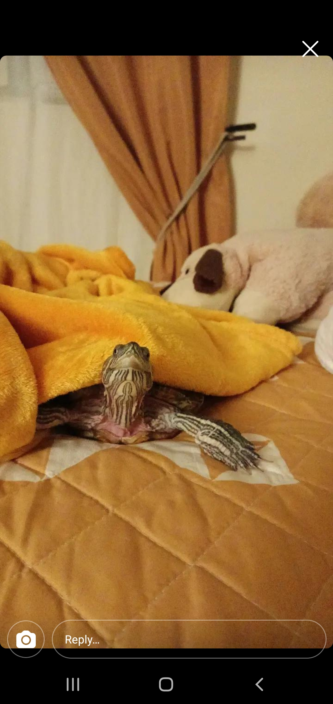

Hello, my name Rashel Solorzano. I am a 4th year Mathematics and Computer Science major at UCSD.
I grew up in the San Fernando Valley specifically Van Nuys, CA. I have two sisters one older and one younger, so I am the middle child.
I had a pretty good childhood. My favorite memories are during the summers. During the summers all the children in my apartment complex would come together and play games such as freeze tag or red light green light. We would also spend a lot of our time at the pool. I love going to the pool because sometimes my mom would surprise me and my siblings by calling us over to come get some fresh fruit or ice cream cones.
We are a total of five people in my family including me. Since we are three girls you can imagine how hectic it can get. We love playing pranks on each other, making jokes, and discovering new places to eat. No matter what happens I know that my siblings are my biggest supporters.
Since moving to San Diego for school, it can be hard being away from my family. When I’m home I know that I can come back from a stressful day and talk to my siblings and have a good laugh. It can feel lonely in San Diego. I have roommates since I live off-campus and yes you can make friendships that can last a lifetime while in college, but to me nothing compares to family friendship.
Although my family is great, the real MVP is my pet turtle. His name is Jeronimo, but I like to just call him turtle. He loves to be cuddled up in blankets on the bed. Although we try to put him in his tank in water he loves making noise till you get him out his tank, so we usually leave him to roam free.
Click here to learn more about some of my favorite things!